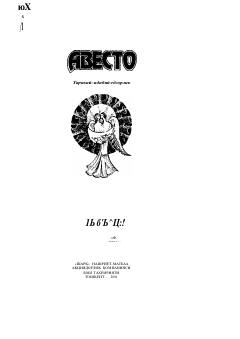

AQadimgi zardushtiylik madaniyati va tarixiga bag'ishlangan muqaddas yodgorlik tarjimasi.
Mazkur kitob qadimiy zardushtiylik va tariximizning muhim manbasi bo'lgan "Avesto" asarining o'zbek tilidagi tarjimasi va uning tahlilini o'z ichiga oladi. Nashr asarning falsafiy, axloqiy va madaniy ahamiyatini ochib berib, ajdodlarimizning boy ma'naviy merosidan hikoya qiladi. Asar O'zbekiston Respublikasining Birinchi Prezidenti Islom Karimovning so'zboshi va tavsiyalari bilan nashr etilgan.